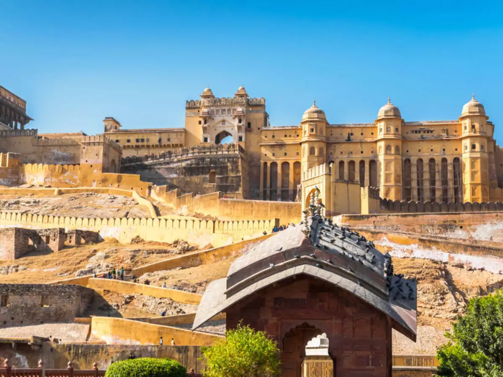
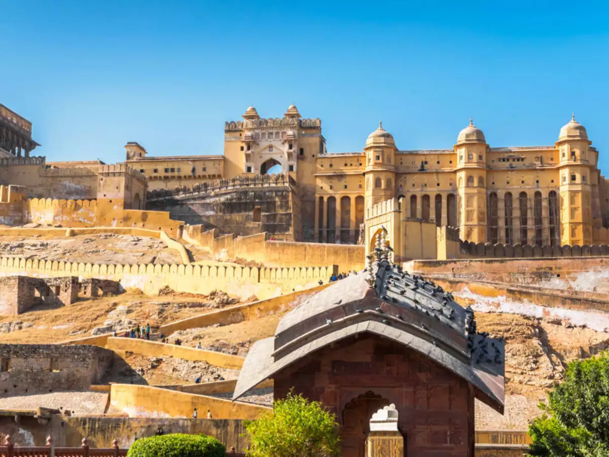

Jaipur
Hawa Mahal


1. Location: Hawa Mahal is located in the Pink City of Jaipur, Rajasthan, India. It is situated on the edge of the City Palace complex and overlooks the bustling streets of Jaipur.
2. Architecture: Hawa Mahal is renowned for its unique honeycomb-shaped facade, which contains 953 small windows (jharokhas) adorned with intricate lattice work. These windows were designed to allow royal women to observe street festivals and daily life without being seen by the public.
3. History: Built-in 1799 by Maharaja Sawai Pratap Singh, Hawa Mahal served as an extension of the royal chambers for the women of the royal household. The palace was designed by Lal Chand Ustad in the form of the crown of Lord Krishna, and its architecture reflects both Rajput and Mughal influences.
4. Purpose: The primary purpose of Hawa Mahal was to allow the royal ladies to observe street processions and festivities while maintaining their privacy. The cool breeze passing through the windows (hence the name "Palace of Winds") provided natural ventilation, keeping the interior chambers cool during the hot summers.
5. Design Elements: In addition to its ornate facade, Hawa Mahal features a small museum showcasing ancient artifacts, sculptures, and paintings. Visitors can climb up to the top floors to enjoy panoramic views of Jaipur's skyline and the bustling streets below.
6. Cultural Significance: Hawa Mahal is an iconic symbol of Jaipur's rich cultural heritage and architectural prowess. It attracts tourists from around the world who marvel at its intricate design and historical significance.
7. Accessibility: Hawa Mahal is easily accessible by road from various parts of Jaipur and is located within walking distance of other popular attractions such as the City Palace and Jantar Mantar. Entry tickets are available for visitors to explore the palace and learn about its fascinating history.
Overall: Hawa Mahal stands as a testament to Jaipur's rich architectural heritage and royal legacy. Its intricate design, historical significance, and panoramic views make it a must-visit destination for anyone exploring the Pink City of Jaipur.
City Palace


1. Location: The City Palace is located in the heart of the Pink City of Jaipur, Rajasthan, India. It is situated near the Hawa Mahal and is easily accessible from various parts of the city.
2. Architecture: The City Palace complex is a blend of Rajput, Mughal, and European architectural styles. It features ornate gateways, marble pavilions, intricately carved balconies, and lush gardens, reflecting the grandeur and opulence of Rajasthan's erstwhile rulers.
3. History: Construction of the City Palace began in the early 18th century under the reign of Maharaja Sawai Jai Singh II, the founder of Jaipur. Over the centuries, subsequent rulers added new structures and embellishments to the palace complex, making it a symbol of Jaipur's rich cultural heritage.
4. Attractions: Within the City Palace complex, visitors can explore several attractions, including the Mubarak Mahal (Welcome Palace), Chandra Mahal (Moon Palace), Diwan-i-Khas (Hall of Private Audience), Diwan-i-Aam (Hall of Public Audience), and the Maharani Palace. The palace also houses museums displaying royal artifacts, textiles, arms, and weaponry.
5. Cultural Events: The City Palace is a venue for various cultural events, festivals, and ceremonies throughout the year. It hosts traditional performances, art exhibitions, and heritage walks that showcase Jaipur's vibrant culture and artistic traditions.
6. Accessibility: The City Palace is easily accessible by road from different parts of Jaipur. Guided tours are available for visitors to explore the palace complex and learn about its history and significance.
Overall: The City Palace is a testament to Jaipur's royal legacy and architectural splendor. Its majestic structures, exquisite craftsmanship, and rich cultural heritage make it a must-visit destination for history buffs, art enthusiasts, and tourists exploring the Pink City.
Amber Fort

 

1. Location: Amber Fort is situated on a hilltop overlooking Maota Lake, approximately 11 kilometers from Jaipur city center. It is easily accessible by road and offers panoramic views of the surrounding landscape.
2. Architecture: Built-in the 16th century by Raja Man Singh I, Amber Fort is a splendid example of Rajput architecture with influences of Mughal and Hindu styles. The fort is made of red sandstone and marble and features intricate carvings, mirror work, frescoes, and ornate gates.
3. History: Amber Fort served as the capital of the Kachwaha Rajputs for several centuries before Jaipur was established. It witnessed numerous battles, alliances, and architectural expansions under various rulers, contributing to its rich historical legacy.
4. Attractions: Within the fort complex, visitors can explore several attractions, including the Diwan-i-Aam (Hall of Public Audience), Diwan-i-Khas (Hall of Private Audience), Sheesh Mahal (Mirror Palace), Sukh Niwas (Pleasure Palace), and the Shila Devi Temple. The fort's imposing walls, majestic gates, and sprawling courtyards offer a glimpse into Rajasthan's royal past.
5. Sound and Light Show: In the evening, Amber Fort hosts a mesmerizing sound and light show that narrates the fort's history through colorful lights, music, and narration. The show creates a magical ambiance and provides insights into the fort's significance over the centuries.
6. Accessibility: Amber Fort can be reached by road from Jaipur city center or through guided tours organized by local operators. Visitors can explore the fort at their own pace or opt for guided tours to learn about its history and architectural features.
Overall: Amber Fort is a captivating monument that epitomizes Rajasthan's royal grandeur and architectural brilliance. Its picturesque setting, intricate craftsmanship, and rich history make it a must-visit destination for travelers exploring the Pink City of Jaipur and its surrounding areas.